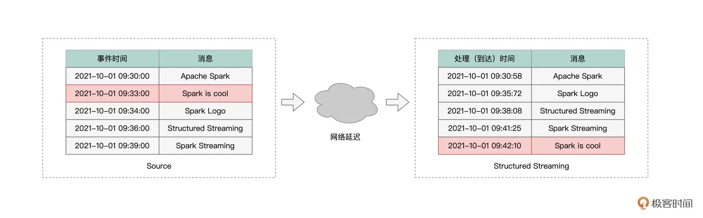

Window 操作 & Watermark¶
Note
为了更好地支持流计算场景，Structured Streaming 引擎提供了一些专门针对流处理的计算能力，比如说 Window 操作、Watermark 与延迟数据处理。
Window 操作¶
Window 操作指的是，Structured Streaming 引擎会基于一定的时间窗口，对数据流中的消息进行消费并处理。
我们需要了解两个基本概念：事件时间 Event Time 和 处理时间 Processing Time.
所谓事件时间，它指的是消息生成的时间。
而处理时间，指的是消息到达 Structured Streaming 引擎的时间。
所谓 Window 操作，实际上就是 Structured Streaming 引擎基于事件时间或是处理时间，以固定间隔划定时间窗口，然后以窗口为粒度处理消息。
from pyspark.sql import SparkSession
spark = SparkSession.builder.appName("window").getOrCreate()
# 模拟 netcat 输入的文本
df = spark.createDataFrame([("2021-10-01 09:30:00,Apache Spark",),
("2021-10-01 09:34:00,Spark Logo",),
("2021-10-01 09:36:00,Structured Streaming",),
("2021-10-01 09:39:00,Spark Streaming",)], ["value"])
import pyspark.sql.functions as F
# 注意最后的 window 操作
df = (df
.withColumn("input", F.split("value", ","))
.withColumn("eventTime", F.element_at("input", 1).cast("timestamp"))
.withColumn("words", F.split(F.element_at("input", 2), " "))
.withColumn("word", F.explode("words"))
.groupBy(F.window("eventTime", "5 minute"), F.col("word")).count())
df.show()
+--------------------+----------+-----+
| window| word|count|
+--------------------+----------+-----+
|{2021-10-01 09:30...| Apache| 1|
|{2021-10-01 09:30...| Spark| 2|
|{2021-10-01 09:30...| Logo| 1|
|{2021-10-01 09:35...|Structured| 1|
|{2021-10-01 09:35...| Streaming| 2|
|{2021-10-01 09:35...| Spark| 1|
+--------------------+----------+-----+
Late data 和 Watermark¶
所谓 Late data，它指的是那些事件时间与处理时间不一致的消息。
通常来说，消息生成的时间，与消息到达流处理引擎的时间，应该是一致的。
不过，在现实情况中，总会有一些消息，因为网络延迟或者这样那样的一些原因，它们到达引擎的时间，甚至晚于那些在它们之后才生成的消息。像这样的消息，我们统称为“Late data”。

Spark 使用 Watermark 机制处理 Late data，Watermark 维护水印与水位线，对标的都是消息的事件时间。
水印相当于系统当前接收到的所有消息中最大的事件时间。
而水位线指的是水印对应的事件时间，减去用户设置的容忍值。
当有新消息到达系统后，若消息的事件时间小于“Watermark 时间窗口下沿”则会被抛弃，所谓“Watermark 时间窗口下沿”指的是水位线所属时间窗口的起始时间。
# 启用Watermark机制，指定容忍度T为10分钟
.withWatermark("eventTime", "10 minute")